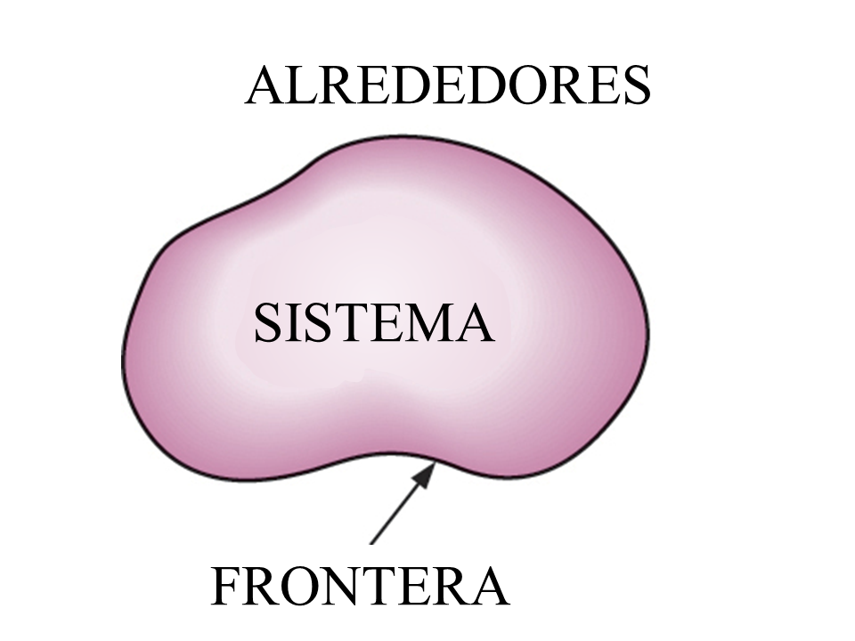
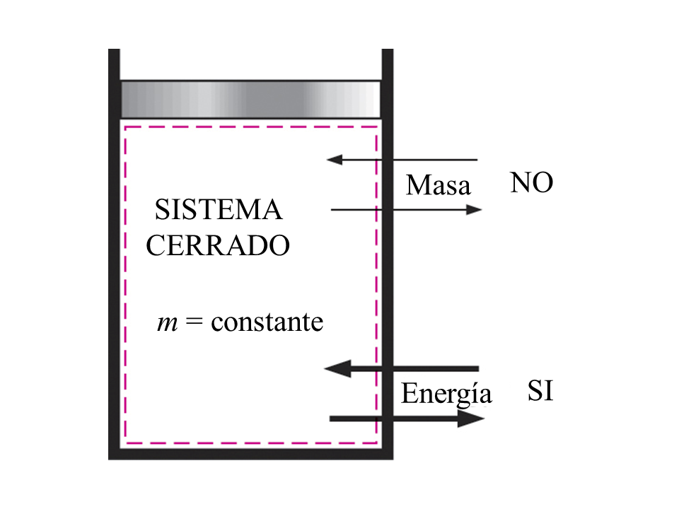
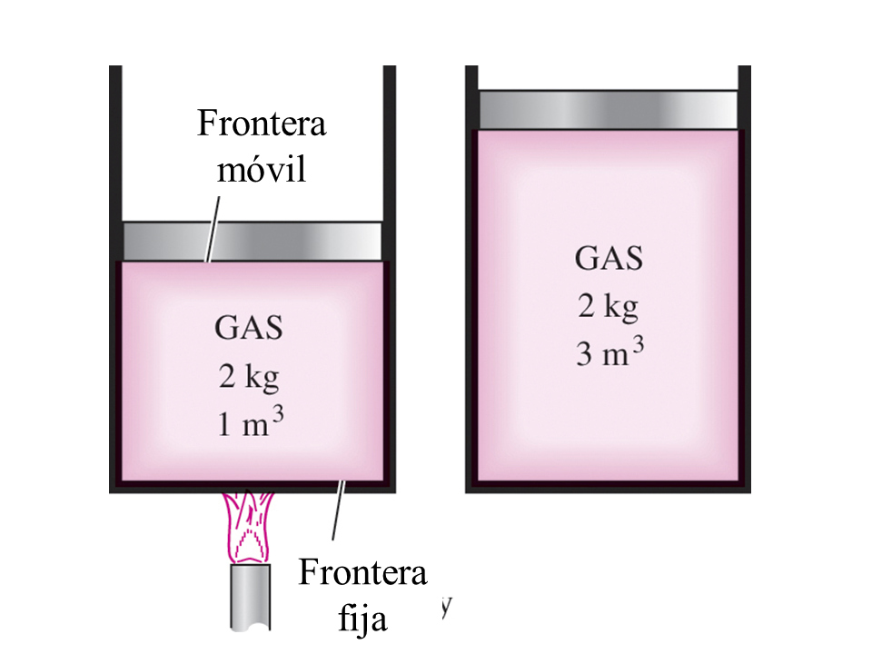
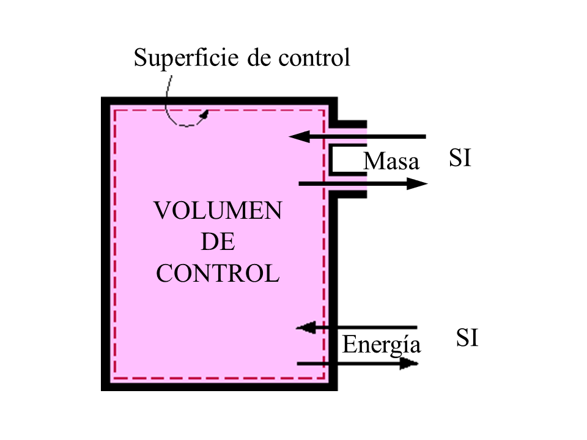
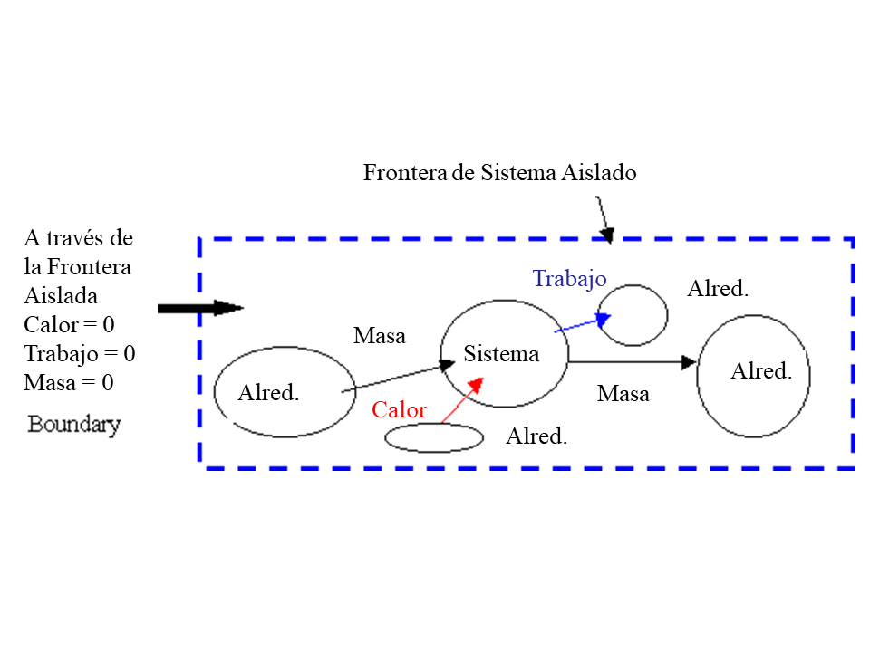
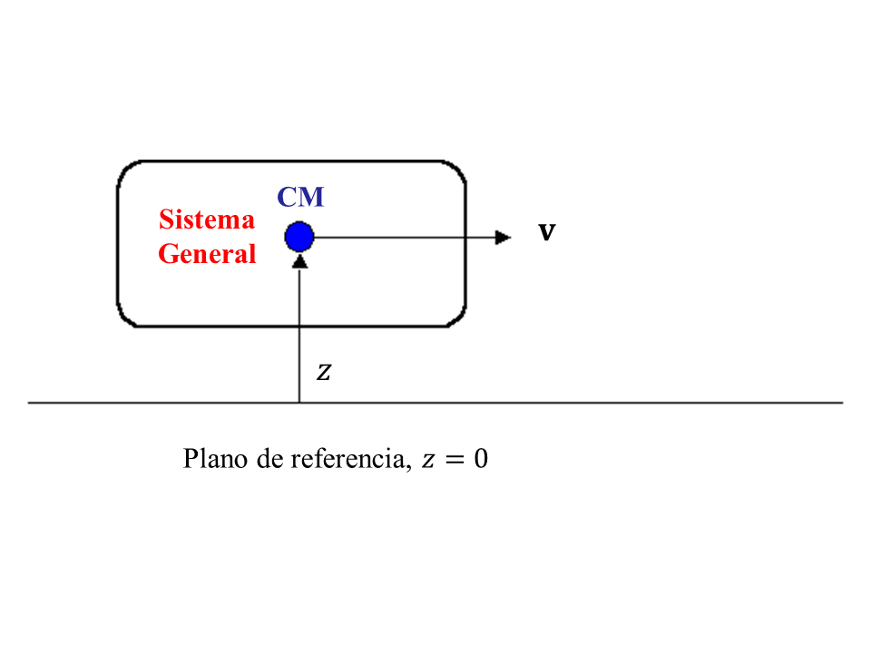
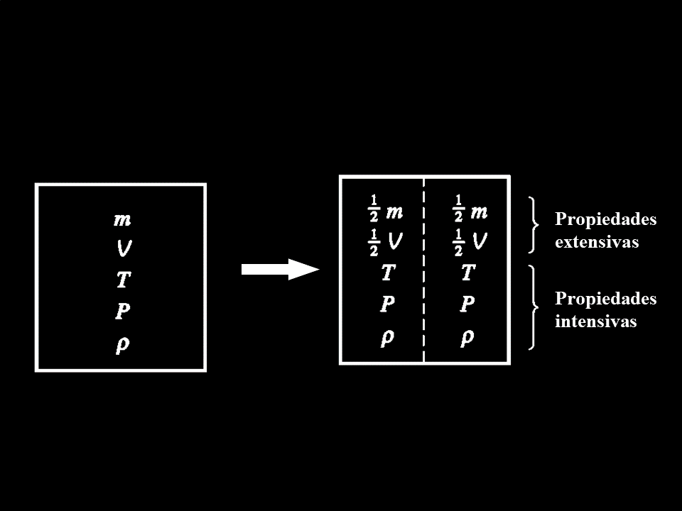

1.1. CONCEPTOS BÁSICOS DE TERMODINÁMICA
Revisa la Bibliografía recomendada en la sección Fuentes de Información del curso.
Notas para la clase, primera parte
INTRODUCCIÓN
El estudio de la termodinámica se refiere a las formas en que la energía se almacena dentro de un cuerpo y cómo pueden tener lugar las transformaciones de energía, que implican calor y trabajo. Una de las leyes más fundamentales de la naturaleza es el principio de conservación de la energía. Simplemente establece que durante una interacción energética, la energía puede cambiar de una forma a otra, pero la cantidad total de energía permanece constante. Es decir, la energía no se puede crear ni destruir.
Esta revisión de la termodinámica se basa en el enfoque macroscópico donde una gran cantidad de partículas, llamadas moléculas, constituyen la substancia en cuestión. El enfoque macroscópico de la termodinámica no requiere el reconocimiento del comportamiento de las partículas individuales, el cual se llama termodinámica clásica. Proporciona una forma directa y fácil de obtener la solución de problemas de ingeniería sin ser demasiado engorroso. Un enfoque más elaborado, basado en el comportamiento promedio de grandes grupos de partículas individuales, se llama termodinámica estadística. Este enfoque microscópico es bastante complicado y no se revisa aquí pero conduce a la definición de la segunda ley de la termodinámica. Nos acercaremos a la segunda ley de la termodinámica desde el punto de vista clásico y aprenderemos que la segunda ley de la termodinámica afirma que la energía tiene calidad así como cantidad, y que los procesos reales ocurren en la dirección de la disminución de la calidad de la energía.
Sistemas Cerrados, Abiertos y Aislados
Un sistema termodinámico, o simplemente sistema, se define como una cantidad de materia o una región en el espacio elegido para su estudio. La región fuera del sistema se llama entorno o los alrededores . La superficie real o imaginaria que separa el sistema de su entorno se llama frontera. La frontera de un sistema puede ser fijo o móvil.
Los alrededores son espacios físicos fuera del límite del sistema.

Se puede considerar que los sistemas están cerrados o abiertos, dependiendo de si se elige una masa fija o un volumen fijo en el espacio para el estudio. Un sistema cerrado consiste en una cantidad fija de masa y ninguna masa puede cruzar la frontera del sistema. La frontera del sistema cerrado puede moverse.
Ejemplos de sistemas cerrados son tanques sellados y dispositivos de cilindro-émbolo (tenga en cuenta que no es necesario que el volumen de control sea fijo). Sin embargo, la energía en forma de calor y trabajo puede cruzar los límites de un sistema cerrado.


Un sistema abierto, o volumen de control, tiene masa y energía que cruza la frontera, llamada superficie de control. Ejemplos de sistemas abiertos son bombas, compresores, turbinas, válvulas e intercambiadores de calor.

Un sistema aislado es un sistema general de masa fija donde el calor o el trabajo no pueden cruzar las fronteras. Un sistema aislado es un sistema cerrado sin energía que cruza las fronteras y normalmente es una colección de un sistema principal y sus alrededores que intercambian masa y energía entre ellos sin ningún otro sistema.

Dado que algunas de las relaciones termodinámicas que son aplicables a los sistemas cerrados y abiertos son diferentes, es extremadamente importante que reconozcamos el tipo de sistema que tenemos antes de comenzar a analizarlo.
Considere el sistema que se muestra a continuación moviéndose con una velocidad, $ \mathbf{v} $, a una elevación, $ z $, en relación con el plano de referencia.

La energía total, $ E $, de un sistema es la suma de todas las formas de energía que pueden existir dentro del sistema, como térmica, mecánica, cinética, potencial, eléctrica, magnética, química y nuclear. La energía total del sistema normalmente se considera la suma de la energía interna, la energía cinética y la energía potencial. La energía interna, $ U $, es la energía asociada con la estructura molecular de un sistema y el grado de actividad molecular (consulte la Sección 1-4 del texto). La energía cinética, $ KE $, existe como resultado del movimiento del sistema en relación con un marco de referencia externo. Cuando el sistema se mueve con cierta velocidad, la energía cinética se expresa como
$$ KE = m \frac{v^2}{2} \; \left(\textrm{ kJ } \right) $$
La energía que posee un sistema como resultado de su elevación en un campo gravitacional en relación con el marco de referencia externo se llama energía potencial, $ PE $, y se expresa como
$$ PE = m g z \; \left(\text{ kJ } \right) $$
donde $ g $ es la aceleración gravitacional y $ z $ es la elevación del centro de gravedad de un sistema en relación con el marco de referencia. La energía total del sistema se expresa como
$$ E = U + KE + PE \;\left(\text{ kJ } \right) $$
o, sobre una base unitaria,
$$ e = \frac{E}{m} = \frac{U}{m} + \frac{KE}{m} + \frac{PE}{m} \; \left( \frac{\textrm{kJ}}{\textrm{kg}} \right) $$
$$ e = u + \frac{v^2}{2} + gz \; \left( \frac{\textrm{kJ}}{\textrm{kg}} \right) $$
donde $ e = \frac {E}{m} $ es la energía almacenada específica, y $ u = \frac {U}{m} $ es la energía interna específica. El cambio en la energía almacenada de un sistema está dado por
$$\Delta E = \Delta U + \Delta KE + \Delta PE \; \left(\text{ kJ } \right) $$
La mayoría de los sistemas cerrados permanecen estacionarios durante un proceso y, por lo tanto, no experimentan cambios en sus energías cinética y potencial; por lo tanto, el cambio en la energía almacenada es idéntica al cambio en la energía interna para los sistemas estacionarios.
Si $ \Delta KE = \Delta PE = 0 $, entonces
$$\Delta E = \Delta U \; \left(\text{ kJ } \right) $$
Cualquier característica de un sistema en equilibrio se llama propiedad. La propiedad es independiente de la trayectoria utilizada para llegar a la condición del sistema.
Algunas propiedades termodinámicas son presión $ p $, temperatura $ T $, volumen $ V $ y masa $ m $. Las propiedades pueden ser intensivas o extensivas.
Las propiedades extensivas son aquellas que varían directamente con el tamaño -o extensión- del sistema. Algunas propiedades extensivas son:
Las propiedades intensivas son aquellas que son independientes del tamaño. Algunas propiedades intensivas son:

Las propiedades extensivas por unidad de masa son propiedades intensivas. Por ejemplo, el volumen específico $ v $ definido como
$$v = \frac{\textrm{Volumen}}{\textrm{masa}} = \frac{V}{m} \; \left( \frac{\textrm{m$^3$}}{\textrm{kg}} \right) $$
y la densidad definida como
$$\rho = \frac{\textrm{masa}}{\textrm{Volumen}} = \frac{m}{V} = \frac{1}{v} \; \left( \frac{\textrm{kg}}{\textrm{m$^3$}} \right) $$
son propiedades intensivas. Unidades< Un componente importante para la solución de cualquier problema termodinámico de ingeniería requiere el uso adecuado de las unidades. La verificación de la unidad es la más simple de todas las verificaciones de ingeniería que se pueden realizar para una solución dada. Dado que las unidades presentan un obstáculo importante para la solución correcta de los problemas termodinámicos, debemos aprender a usar las unidades con cuidado y de manera adecuada. El sistema de unidades seleccionadas para este curso es el Sistema SI que también se conoce como el Sistema Internacional (a veces llamado el sistema métrico). En SI, las unidades de masa, longitud y tiempo son el kilogramo (kg), el metro (m) y el segundo (s), respectivamente. Consideramos que la fuerza es una unidad derivada de la segunda ley de Newton, es decir,
$$\text{ Fuerza } = \left(\text{ masa } \right) \left(\text{ aceleración } \right) $$
$$ \mathbf{F} = m \mathbf{a} $$
En SI, la unidad de fuerza es el Newton (N), y se define como la fuerza requerida para acelerar una masa de 1 kg a una razón de
$\displaystyle{ 1 \frac{\text{m}}{\text{s$^2$}}}$. Es decir,
$$ 1\text{N} = \left(1\text{kg} \right) \left(1 \frac{\text{m}}{\text{s$^2$}} \right) $$
El término peso a menudo se usa mal para expresar masa. A diferencia de la masa, el peso $ W_t $ es una fuerza. El peso es la fuerza gravitacional aplicada a un cuerpo, y su magnitud se determina a partir de la segunda ley de Newton.
$$ W_t = m g $$
donde $ m $ es la masa del cuerpo y $ g $ es la aceleración gravitacional local ($ g $ es 9.807 $ \displaystyle{\frac{\text{m}}{\text{s$^2$}}}$ a nivel del mar y 45$^\circ$ de latitud).
El peso de una unidad de volumen de una sustancia se llama peso específico $ w $ y se determina a partir de $ w = \rho g$, donde $\rho$ es la densidad. Muchas veces el ingeniero debe trabajar en otros sistemas de unidades. A continuación, se muestra la comparación de las unidades consuetudinarias de los Estados Unidos (USCS), o Sistema Inglés, y las unidades del sistema SI.
| Propiedad | SI | USC | Slug |
| Masa | kilogramo (kg) | libra-masa (lbm) | masa en slug (slug) |
| Tiempo | segundo (s) | segundo (s) | segundo (s) |
| Longitud | metro (m) | pie (ft) | pie (ft) |
| Fuerza | Newton (N) | libra-fuerza (lbf) | libra-fuerza (lbf) |
A veces usamos el número molar en lugar de la masa. En las unidades SI, el número de moles está en kilogramos-moles, o kmol.
La segunda ley de Newton a menudo se escribe como
$$ F = \frac{m a}{g_c} $$
donde $ g_c $ se llama constante gravitacional y se obtiene de la definición de fuerza. En el Sistema SI 1 Newton es la fuerza requerida para acelerar
$\displaystyle{ 1 \frac{\text{m}}{\text{s$^2$}}}$ a $1 \text{kg}$ de masa. La constante gravitacional en el sistema SI es
$$ g_c = \frac{m \; a}{F} = \frac{ \left( 1\;\text{kg}\right) \left( 1\; \displaystyle{\frac{\text{m}}{\text{s}^2}} \right)}{1\text{N}} = 1 \frac{\text{kg}\;\text{m}}{\text{N} \; \text{s}^2}$$
En el USCS, 1 libra-fuerza es la fuerza requerida para acelerar 32.176 $ 1 \frac{\textrm{ft}}{\textrm{s$^2$}}$ a 1 libra-masa. La constante gravitacional en el Sistema USC es
$$ g_c = \frac{m \; a}{F} = \frac{ \left( 1\;\text{lb}\right) \left( 32.2 \; \displaystyle{\frac{\text{ft}}{\text{s}^2}} \right)} {1 \;\text{lbf}} = 32.2 \frac{\text{lb}\;\text{ft}}{\text{lbf} \;\text{s}^2}$$
En el sistema slug, la constante gravitacional es
$$ g_c = \frac{m \; a}{F} = \frac{ \left( 1 \; \text{lb}\right) \left( 1 \; \displaystyle{\frac{\text{ft}}{\text{s}^2}}\right) }{1 \;\text{lbf}} = 1 \frac{\textrm{lb}\;\text{ft}}{\text{lbf} \;\text{s}^2}$$.